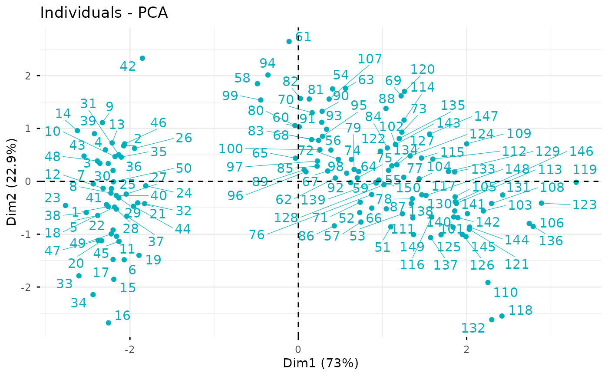
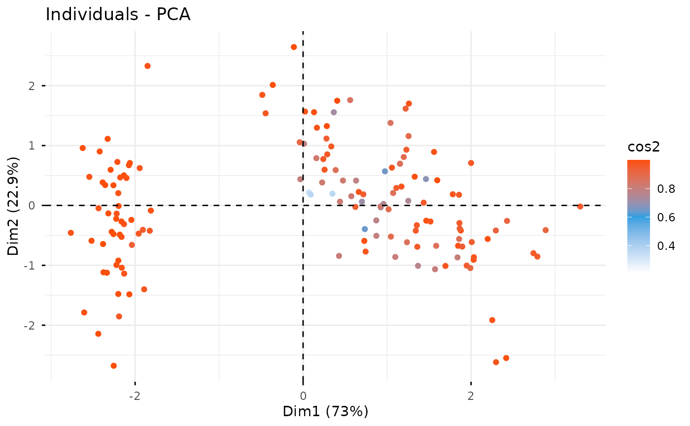
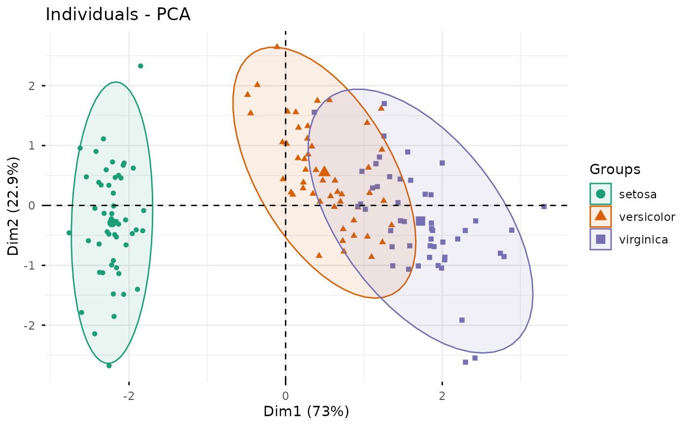
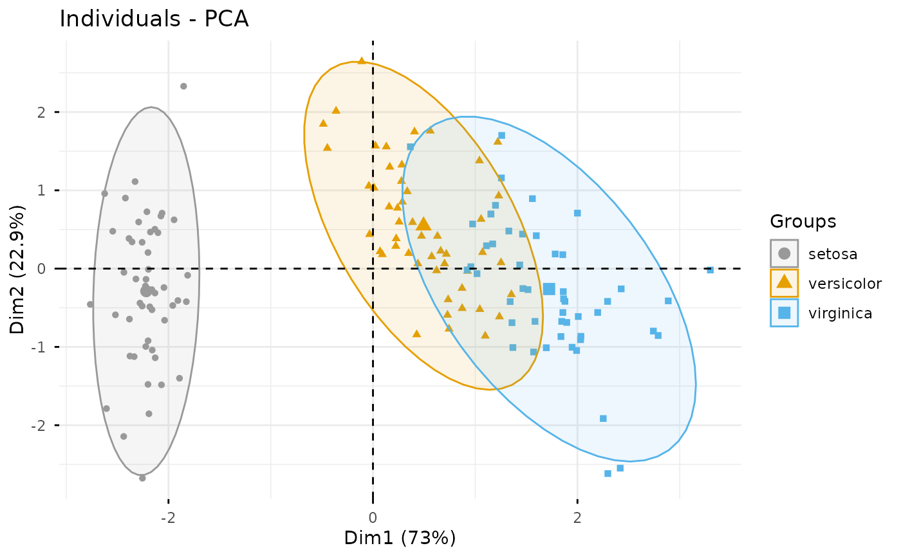
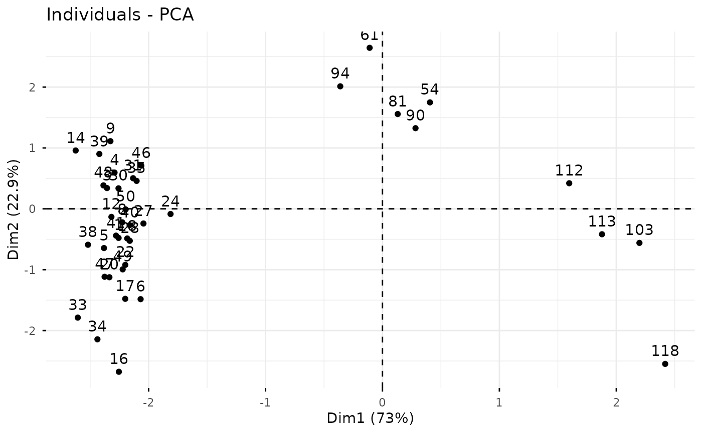
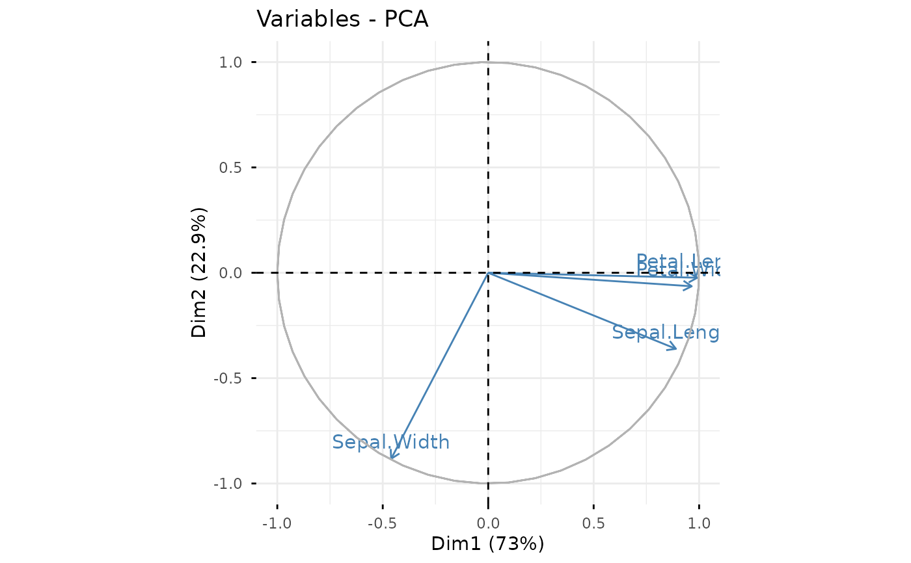
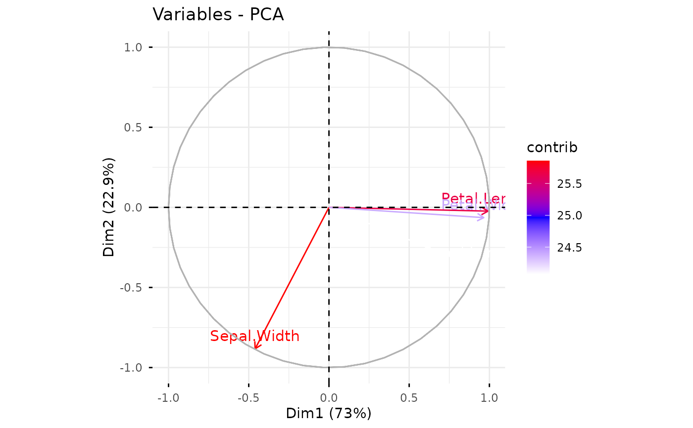
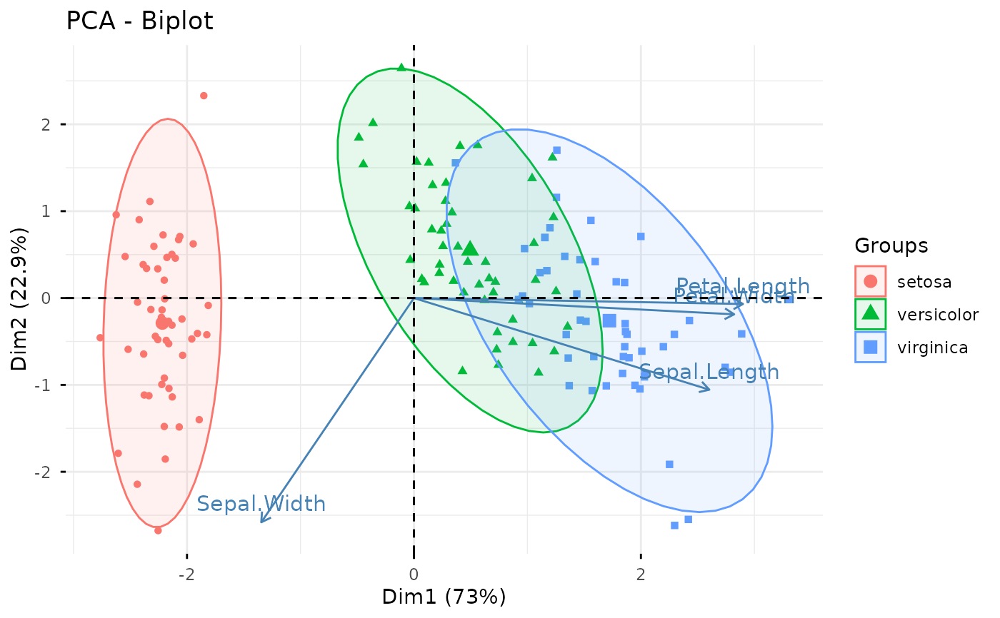
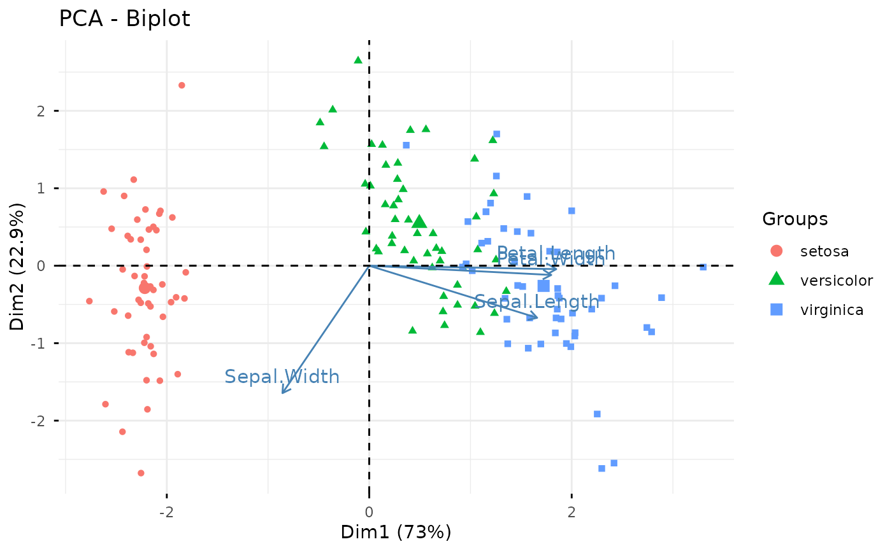
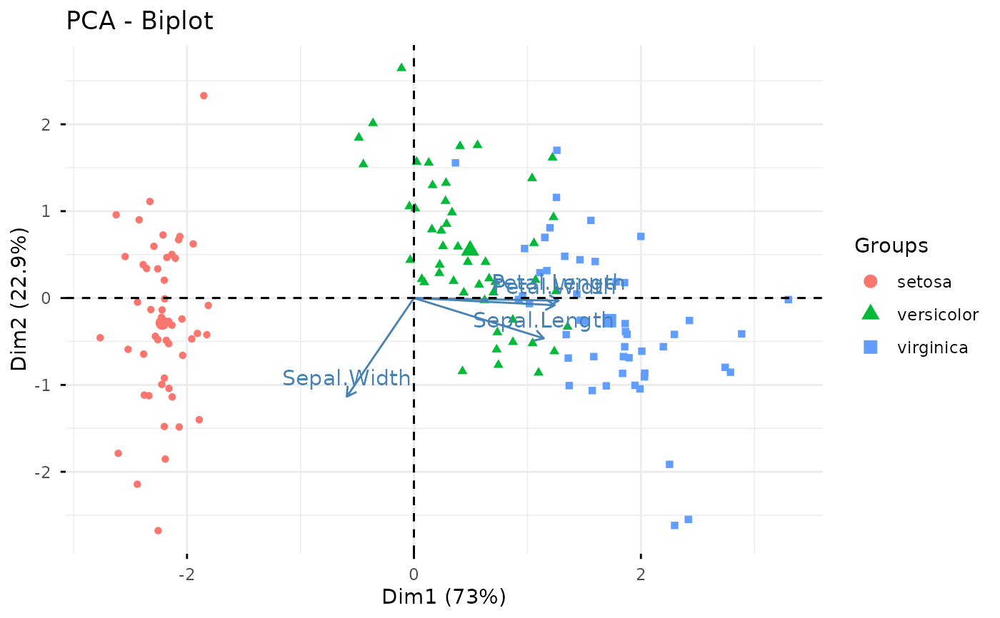

Principal component analysis (PCA) reduces the dimensionality of multivariate data, to two or three that can be visualized graphically with minimal loss of information. fviz_pca() provides ggplot2-based elegant visualization of PCA outputs from: i) prcomp and princomp [in built-in R stats], ii) PCA [in FactoMineR], iii) dudi.pca [in ade4] and epPCA [ExPosition]. Read more: Principal Component Analysis
fviz_pca_ind(): Graph of individuals
fviz_pca_var(): Graph of variables
fviz_pca_biplot(): Biplot of individuals and variables
fviz_pca(): An alias of fviz_pca_biplot()
Note that, fviz_pca_xxx() functions are wrapper around the core
function fviz(), which is also a wrapper around the
function ggscatter() [in ggpubrplus]. Therefore, further arguments, to be
passed to the function fviz() and ggscatter(), can be specified in
fviz_pca_ind() and fviz_pca_var().
Usage
fviz_pca(X, ...)
fviz_pca_ind(
X,
axes = c(1, 2),
geom = c("point", "text"),
geom.ind = geom,
repel = FALSE,
habillage = "none",
palette = NULL,
addEllipses = FALSE,
col.ind = "black",
fill.ind = "white",
col.ind.sup = "blue",
alpha.ind = 1,
select.ind = list(name = NULL, cos2 = NULL, contrib = NULL),
...
)
fviz_pca_var(
X,
axes = c(1, 2),
geom = c("arrow", "text"),
geom.var = geom,
repel = FALSE,
col.var = "black",
fill.var = "white",
alpha.var = 1,
col.quanti.sup = "blue",
col.circle = "grey70",
select.var = list(name = NULL, cos2 = NULL, contrib = NULL),
...
)
fviz_pca_biplot(
X,
axes = c(1, 2),
geom = c("point", "text"),
geom.ind = geom,
geom.var = c("arrow", "text"),
col.ind = "black",
fill.ind = "white",
col.var = "steelblue",
fill.var = "white",
gradient.cols = NULL,
label = "all",
invisible = "none",
repel = FALSE,
habillage = "none",
palette = NULL,
addEllipses = FALSE,
title = "PCA - Biplot",
biplot.type = c("auto", "form", "covariance"),
...
)Arguments
- X
an object of class PCA [FactoMineR]; prcomp and princomp [stats]; dudi and pca [ade4]; expOutput/epPCA [ExPosition].
- ...
Additional arguments.
in fviz_pca_ind() and fviz_pca_var(): Additional arguments are passed to the functions fviz() and ggpubrplus::ggpar().
in fviz_pca_biplot() and fviz_pca(): Additional arguments are passed to fviz_pca_ind() and fviz_pca_var().
- axes
a numeric vector of length 2 specifying the dimensions to be plotted.
- geom
a text specifying the geometry to be used for the graph. Allowed values are the combination of
c("point", "arrow", "text"). Use"point"(to show only points);"text"to show only labels;c("point", "text")orc("arrow", "text")to show arrows and texts. Usingc("arrow", "text")is sensible only for the graph of variables.- geom.ind, geom.var
as
geombut for individuals and variables, respectively. Default is geom.ind = c("point", "text), geom.var = c("arrow", "text").- repel
a boolean, whether to use ggrepel to avoid overplotting text labels or not. The old
jitterargument is kept for backward compatibility and is silently converted torepel = TRUE.- habillage
an optional factor variable for coloring the observations by groups. Default value is "none". If X is a PCA object from FactoMineR package, habillage can also specify the supplementary qualitative variable (by its index or name) to be used for coloring individuals by groups (see ?PCA in FactoMineR).
- palette
the color palette to be used for coloring or filling by groups. Allowed values include "grey" for grey color palettes; brewer palettes e.g. "RdBu", "Blues", ...; or custom color palette e.g. c("blue", "red"); and scientific journal palettes from ggsci R package, e.g.: "npg", "aaas", "lancet", "jco", "ucscgb", "uchicago", "simpsons" and "rickandmorty". Can be also a numeric vector of length(groups); in this case a basic color palette is created using the function palette.
- addEllipses
logical value. If TRUE, draws ellipses around the individuals when habillage != "none".
- col.ind, col.var
color for individuals and variables, respectively. Can be a continuous variable or a factor variable. Possible values include also : "cos2", "contrib", "coord", "x" or "y". In this case, the colors for individuals/variables are automatically controlled by their qualities of representation ("cos2"), contributions ("contrib"), coordinates (x^2+y^2, "coord"), x values ("x") or y values ("y"). To use automatic coloring (by cos2, contrib, ....), make sure that habillage ="none".
- fill.ind, fill.var
same as col.ind and col.var but for the fill color.
- col.ind.sup
color for supplementary individuals
- alpha.ind, alpha.var
controls the transparency of individual and variable colors, respectively. The value can variate from 0 (total transparency) to 1 (no transparency). Default value is 1. Possible values include also : "cos2", "contrib", "coord", "x" or "y". In this case, the transparency for the individual/variable colors are automatically controlled by their qualities ("cos2"), contributions ("contrib"), coordinates (x^2+y^2, "coord"), x values("x") or y values("y"). To use this, make sure that habillage ="none".
- select.ind, select.var
a selection of individuals/variables to be drawn. Allowed values are NULL or a list containing the arguments name, cos2 or contrib:
name: is a character vector containing individuals/variables to be drawn
cos2: if cos2 is in [0, 1], ex: 0.6, then individuals/variables with a cos2 > 0.6 are drawn. if cos2 > 1, ex: 5, then the top 5 individuals/variables with the highest cos2 are drawn.
contrib: if contrib > 1, ex: 5, then the top 5 individuals/variables with the highest contrib are drawn
- col.quanti.sup
a color for the quantitative supplementary variables.
- col.circle
a color for the correlation circle. Used only when X is a PCA output.
- gradient.cols
vector of colors to use for n-colour gradient. Allowed values include brewer and ggsci color palettes.
- label
a text specifying the elements to be labelled. Default value is "all". Allowed values are "none" or the combination of c("ind", "ind.sup", "quali", "var", "quanti.sup"). "ind" can be used to label only active individuals. "ind.sup" is for supplementary individuals. "quali" is for supplementary qualitative variables. "var" is for active variables. "quanti.sup" is for quantitative supplementary variables.
- invisible
a text specifying the elements to be hidden on the plot. Default value is "none". Allowed values are the combination of c("ind", "ind.sup", "quali", "var", "quanti.sup").
- title
the title of the graph
- biplot.type
type of biplot scaling for fviz_pca_biplot(). Options are:
"auto" (default): Uses range-based rescaling for visualization
"form": Form biplot (Gabriel, 1971). Distances between individuals approximate Euclidean distances. Use when focus is on individual relationships.
"covariance": Covariance biplot (Gabriel, 1971). Angles between variable vectors approximate correlations, lengths approximate standard deviations. Use when focus is on variable relationships.
Note: "form" and "covariance" scaling requires prcomp or princomp objects.
Author
Alboukadel Kassambara alboukadel.kassambara@gmail.com
Examples
# \donttest{
# Principal component analysis
# ++++++++++++++++++++++++++++++
data(iris)
res.pca <- prcomp(iris[, -5], scale = TRUE)
# Graph of individuals
# +++++++++++++++++++++
# Default plot
# Use repel = TRUE to avoid overplotting (slow if many points)
fviz_pca_ind(res.pca, col.ind = "#00AFBB",
repel = TRUE)

# 1. Control automatically the color of individuals
# using the "cos2" or the contributions "contrib"
# cos2 = the quality of the individuals on the factor map
# 2. To keep only point or text use geom = "point" or geom = "text".
# 3. Change themes using ggtheme: http://www.sthda.com/english/wiki/ggplot2-themes
fviz_pca_ind(res.pca, col.ind="cos2", geom = "point",
gradient.cols = c("white", "#2E9FDF", "#FC4E07" ))

# Color individuals by groups, add concentration ellipses
# Change group colors using RColorBrewer color palettes
# Read more: http://www.sthda.com/english/wiki/ggplot2-colors
# Remove labels: label = "none".
fviz_pca_ind(res.pca, label="none", habillage=iris$Species,
addEllipses=TRUE, ellipse.level=0.95, palette = "Dark2")

# Change group colors manually
# Read more: http://www.sthda.com/english/wiki/ggplot2-colors
fviz_pca_ind(res.pca, label="none", habillage=iris$Species,
addEllipses=TRUE, ellipse.level=0.95,
palette = c("#999999", "#E69F00", "#56B4E9"))

# Select and visualize some individuals (ind) with select.ind argument.
# - ind with cos2 >= 0.96: select.ind = list(cos2 = 0.96)
# - Top 20 ind according to the cos2: select.ind = list(cos2 = 20)
# - Top 20 contributing individuals: select.ind = list(contrib = 20)
# - Select ind by names: select.ind = list(name = c("23", "42", "119") )
# Example: Select the top 40 according to the cos2
fviz_pca_ind(res.pca, select.ind = list(cos2 = 40))

# Graph of variables
# ++++++++++++++++++++++++++++
# Default plot
fviz_pca_var(res.pca, col.var = "steelblue")

# Control variable colors using their contributions
fviz_pca_var(res.pca, col.var = "contrib",
gradient.cols = c("white", "blue", "red"),
ggtheme = theme_minimal())

# Biplot of individuals and variables
# ++++++++++++++++++++++++++
# Keep only the labels for variables
# Change the color by groups, add ellipses
fviz_pca_biplot(res.pca, label = "var", habillage=iris$Species,
addEllipses=TRUE, ellipse.level=0.95,
ggtheme = theme_minimal())

# Biplot types (Gabriel, 1971):
# Form biplot - focus on individual distances
fviz_pca_biplot(res.pca, biplot.type = "form",
label = "var", habillage = iris$Species)

# Covariance biplot - focus on variable correlations
fviz_pca_biplot(res.pca, biplot.type = "covariance",
label = "var", habillage = iris$Species)

# }